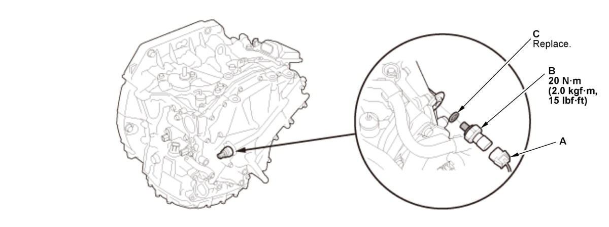

Removal and Installation
NOTE: Keep all foreign particles out of the transmission.
- Air Cleaner - Remove
- CVT Driven Pulley Pressure Sensor - Remove
1. Disconnect the connector (A).

Courtesy of HONDA, U.S.A., INC.2. Remove the CVT driven pulley pressure sensor (B) with the sealing washer (C).
NOTE: Be careful not to damage the plastic part.
- All Removed Parts - Install
1. Install the parts in the reverse order of removal.
NOTE:- Be sure to use a new sealing washer.
- Check the connector for corrosion, dirt, or oil, and clean or repair if necessary.
- TCM - Reset
(Only for Replacing CVT Driven Pulley Pressure Sensor)
NOTE: This procedure is not required, if the CVT driven pulley pressure sensor and the TCM are replaced simultaneously.